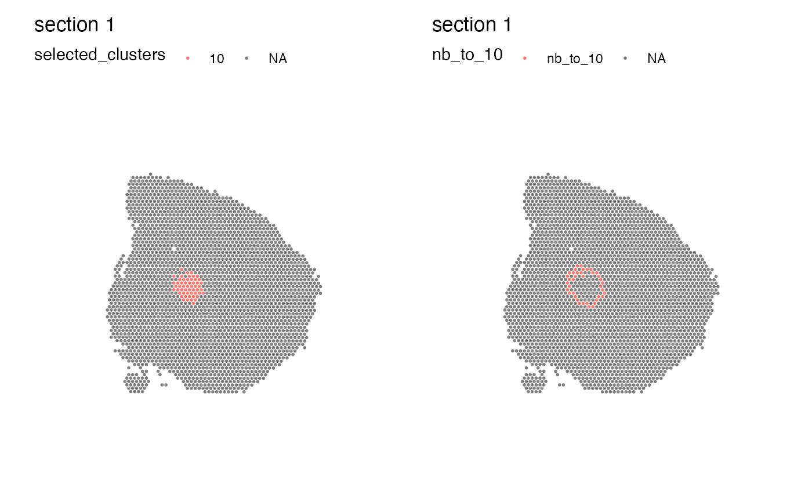
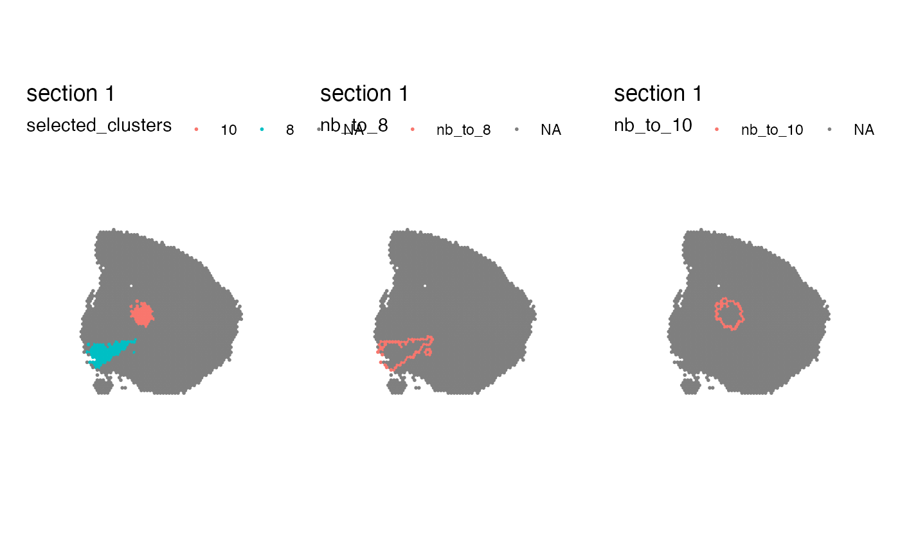
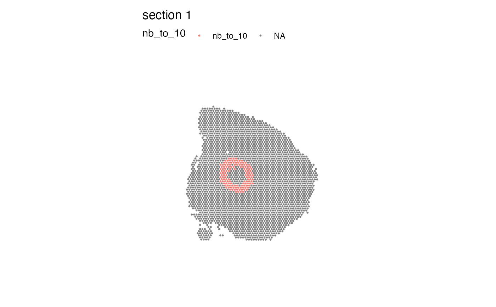

Find region neighbors
region-neighbors.RdThis function allows you to automatically identify neighbors of a selected region.
Usage
RegionNeighbors(object, ...)
# Default S3 method
RegionNeighbors(
object,
spots,
mode = c("outer", "inner", "inner_outer", "all_inner_outer"),
verbose = FALSE,
...
)
# S3 method for class 'Seurat'
RegionNeighbors(
object,
column_name,
column_labels = NULL,
mode = c("outer", "inner", "inner_outer", "all_inner_outer"),
column_key = NULL,
verbose = TRUE,
...
)Arguments
- object
An object
- ...
Arguments passed to other methods
- spots
A character vector with spot IDs present in `spatnet`
- mode
Select mode (see details)
- verbose
Print messages
- column_name
string specifying a column name in your meta data with labels, e.g. clusters or manual selections
- column_labels
character vector with labels to find nearest neighbors for. These labels need to be present in the meta data columns specified by
column_name- column_key
prefix to columns returned in the Seurat object
Seurat
If a Seurat object is provided, the RegionNeighbors takes a meta
data column (chosen with column_name) with categorical labels,
finds the nearest neighbors of spots for a selected group in this columns
(chosen with column_labels) and returns new meta data column with
labels for the nearest neighbors of the selected group. If no column_labels
are specified, the method will return a column for each separate category in
the column_name vector.
Note that the prefix to the returned column names will be selected based on the mode.
You can overwrite this behavior by manually setting column_key.
Below is some additional information about the behavior of different modes:
return outer border (default):
mode="outer"return inner border:
mode="inner"return inner and outer borders:
mode="inner_outer"return all selected spots and outer border:
mode="all_inner_outer"
default method
The default method takes a list of spatial networks generated with
GetSpatialNetwork together with a vector of spot IDs
and returns the spot IDs for border spots. The behavior for border
spot selection is determined by the mode.
See also
Other spatial-methods:
CorSpatialFeatures(),
CutSpatialNetwork(),
DisconnectRegions(),
GetSpatialNetwork(),
RadialDistance(),
RunLabelAssortativityTest(),
RunLocalG(),
RunNeighborhoodEnrichmentTest()
Examples
library(semla)
library(dplyr)
se_mbrain <-
readRDS(system.file("extdata",
"/mousebrain/se_mbrain",
package = "semla"))
# Create Seurat object
se_mbrain <- se_mbrain |>
ScaleData(verbose = FALSE) |>
RunPCA(verbose = FALSE) |>
FindNeighbors(verbose = FALSE) |>
FindClusters(verbose = FALSE)
# Find neighbors to cluster 10
se_mbrain <- RegionNeighbors(se_mbrain,
column_name = "seurat_clusters",
column_labels = "10")
#> ℹ Finding neighboring spots for '10'
#> → Excluding neighbors from the same group
#> → 74 neighbors left
#> → Returning neighbors
# Plot cluster 10 and its neighbors
se_mbrain$selected_clusters <- se_mbrain[[]] |>
mutate(across(where(is.factor), as.character)) |>
mutate(cl = case_when(seurat_clusters %in% "10" ~ seurat_clusters,
TRUE ~ NA_character_)) |>
pull(cl)
MapLabels(se_mbrain, column_name = "selected_clusters") |
MapLabels(se_mbrain, column_name = "nb_to_10")

# \donttest{
# Find neighbors to clusters 8 and 10
se_mbrain$selected_clusters <- se_mbrain[[]] |>
mutate(across(where(is.factor), as.character)) |>
mutate(cl = case_when(seurat_clusters %in% c("8", "10") ~ seurat_clusters,
TRUE ~ NA_character_)) |>
pull(cl)
se_mbrain <- RegionNeighbors(se_mbrain,
column_name = "seurat_clusters",
column_labels = c("8", "10"))
#> ℹ Finding neighboring spots for '8'
#> → Excluding neighbors from the same group
#> → 112 neighbors left
#> → Returning neighbors
#> ℹ Finding neighboring spots for '10'
#> → Excluding neighbors from the same group
#> → 74 neighbors left
#> → Returning neighbors
# Plot cluster 8, 10 and its neighbors
library(patchwork)
MapLabels(se_mbrain, column_name = "selected_clusters") +
MapLabels(se_mbrain, column_name = "nb_to_8") +
MapLabels(se_mbrain, column_name = "nb_to_10") +
plot_layout(design = c(area(1, 1, 1, 1),
area(1, 2, 1, 2),
area(1, 3, 1, 3)))

# it is also possible to pass additional parameters to GetSpatialNetwork
# to make it find more neighbors at a larger distances
se_mbrain <- RegionNeighbors(se_mbrain,
column_name = "seurat_clusters",
column_labels = "10",
nNeighbors = 40,
maxDist = Inf)
#> ℹ Finding neighboring spots for '10'
#> → Excluding neighbors from the same group
#> → 860 neighbors left
#> → Returning neighbors
MapLabels(se_mbrain, column_name = "nb_to_10")

# }